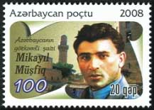

Mikayıl Müşfiqin xatirəsinə çoxlu sayda əsərlər həsr olunmuşdur. Bunlardan Hikmət Ziyanın Bu dərdi kim unudar, Mədinə Gülgünün Ölməz Müşfiq üçün, Hüseyn Arifin Bir gül açdı, sarı gül, Balaş Azəroğlunun Yenə o bağ olaydı, Əli Kərimin Müşfiqə, Əliağa Kürçaylının Müşfiqi yaşıdından sordum, Nüsrət Kəsəmənlinin Müşfiqin tarı əsərlərini qeyd etmək olar.
Şəmsəddin Abbasovun nəşriyyatdan Müşfiqin sonuncu Çağlayan poemasının qovluğunu 1937-ci ildə xilas edib götürdüyü sonradan məlum oldu. Kitabdakı şeirlər çap edildi. 1957-ci ildə şairin bəraətdən sonra ikicildliyi çap edildi.
Mikayıl Müşfiqin sözlərinə Zeynəb Xanlarovanın ifasında Qal sənə Qurban və Sənin üçün, Şövkət Ələkbərovanın Qurban olduğum və Neçin gəlmədin, Gülağa Məmmədovun Oxu Tar, Eyyub Yaqubovun Yenə o bağ olaydı, Küləklər və Ana Dedim, Nəzakət Məmmədovanın Oxu sevdiciyim, Alim Qasımovun Söylə mahnılarını qeyd etmək olar.
1968-ci ildə heykəltaraş Münəvvər Rzayeva və memar Şəfiqə Rzayeva tərəfindən Mikayıl Müşfiqin heykəli işlənib hazırlanmışdır. 1970-ci il iyun ayının 9-da Bakı şəhəri, Yasamal rayonu İnşaatçılar prospekti və Nəriman Nərimanov küçələrinin kəsişməsində abidəsinin açılışı olmuşdur.
1977-ci ildə adının əbədiləşdirilməsi məqsədilə Xəzər Gəmiçiliyi İdarəsi tərəfindən Mikayıl Müşfiq quru yük gəmisi suya buraxılmışdır.
1988-ci ildə Azərbaycan Respublikası Ali Sovetinin 1096-XI saylı fərmanı ilə Müşfiqabad — yeni şəhər tipli qəsəbə yaradılmışdır.
1988-ci ildə Mikayıl Müşfiqin 80 illik yubileyi çərçivəsində Tofiq Novruzovun, Cabir Novruzun, Aydın Zeynalovun, Nəbi Xəzrinin təşəbbüsü ilə Xızı rayonunun Sayadlar kəndində şairin atası Əbdülqədirin bağ evinin yerində Mikayıl Müşfiq ocağı yaradılmışdır. Muzeydə şairə simvolik məzar qoyulmuşdur. 2004-cü ildə Azərbaycan Mədəniyyət Nazirliyinin sərəncamı ilə Xızıdakı Mikayıl Müşfiq ocağıMikayıl Müşfiqin Xatirə Muzeyi statusu almışdır. 2008-ci il iyun ayının 23-də 100 illik yubileyi ilə əlaqədar Xızı rayonunun Sayadlar kəndində şairin yeni bərpa olunmuş evinin təntənəli açılışı olmuşdur.
1988-ci ildə Sumqayıt şəhərində şairin adını daşıyan tam orta məktəb binası istifadəyə verilmişdir. Binanın önündə Mikayıl Müşfiqin büstü qoyulmuşdur.
1989-cu ildə Xızı rayonunun Sayadlar kəndində xeyriyyəçi polkovnik Əbülhəsən Əhmədovun şəxsi təşəbbüsü ilə büstü qoyulmuşdur. Büst memar Münəvvər Rzayeva tərəfindən hazırlanmışdır.
1989-cu ildə Mikayıl Müşfiqin xatirəsinin əbədiləşdirilməsi məqsədilə Bakıda yaşadığı binaya (S. Rəhimov küçəsi, 108) xatirə lövhəsi vurulmuşdur.
1993-cü ildə Bakı şəhərinin Qaradağ rayonunda adını daşıyan qəsəbədə abidəsinin açılışı olmuşdur.
1998-ci ildə Azərbaycan Respublikasının Prezidenti Heydər Əliyev Mikayıl Müşfiqin 90 illik yubileyinin keçirilməsi haqqında Sərəncam imzalamışdır.
2005-ci ildə Müşfiqli günlərim kitabının son genişləndirilmiş nəşri Gənclik nəşriyyatında işıq üzü görmüşdür.
2007-ci il 16 apreldə Azərbaycan Respublikasının Prezidenti İlham Əliyev Mikayıl Müşfiqin 100 illik yubileyinin keçirilməsi haqqında Sərəncam imzalamışdır.
2008-ci il Qaradağ Rayon İcra Hakimiyyətinin və Müşfiqsevərlər Cəmiyyətinin təşkilatçılığı ilə görkəmli Azərbaycan şairi Mikayıl Müşfiqin 100 illik yubileyi təntənə ilə qeyd edilmişdir.
2008-ci ildə Mikayıl Müşfiqin anadan olmasının 100 illiyi münasibətilə Azərbaycan Respublikası Rabitə və İnformasiya Texnologiyaları Nazirliyinin Azərpoçt birliyi marka buraxmışdır.
Mikayıl Müşfiqin 110 illik yubileyinin keçirilməsi haqqında Azərbaycan Respublikası Prezidenti İlham Əliyev Azərbaycan Respublikası Konstitusiyasının 109-cu maddəsinin 32-ci bəndinə əsasən 17 may 2018-ci ildə Sərəncam imzalamışdır.
15 oktyabr 2019-cu ildə Bakı şəhəri Qaradağ rayonunun Müşfiqabad qəsəbəsində Mikayıl Müşfiqin yeni ağ mərmərdən yonulmuş abidəsinin və xatirə parkının açılışı olmuşdur.
Azərbaycan Respublikası Nazirlər Kabinetinin 7 may 2019-cu il tarixli, 211 nömrəli Qərarı ilə Mikayıl Müşfiq Azərbaycan Respublikasında əsərləri dövlət varidatı elan edilən müəlliflərin siyahısına daxil edilmişdir.
Hal-hazırda Mikayıl Müşfiqin yaradıcılığına Rusiya Milli Kitabxanası, Rusiya Dövlət Kitabxanası, ABŞ Konqres Kitabxanası, Belarus Milli Kitabxanası, Türkiyə Milli Kitabxanası, Estoniya Milli Kitabxanası kimi dünya kitabxanalarında rast gəlmək olar.
2020-ci ildə bəstəkar Cavanşir Quliyev Mikayıl Müşfiqin acı taleyindən bəhs edən 13 hissəli Müşfiq ağıları oratoriyasını bəstələmişdir. Oratoriyanın libretto müəllifi Sabir Rüstəmxanlıdır.

Mikayıl Müşfiqin 100 illik yubileyinə həsr olunan poçt markası